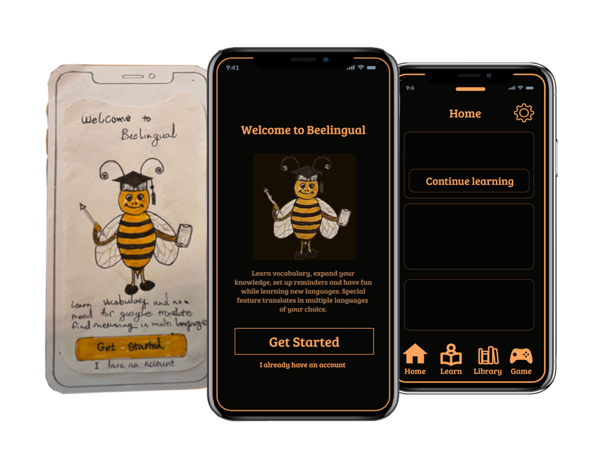
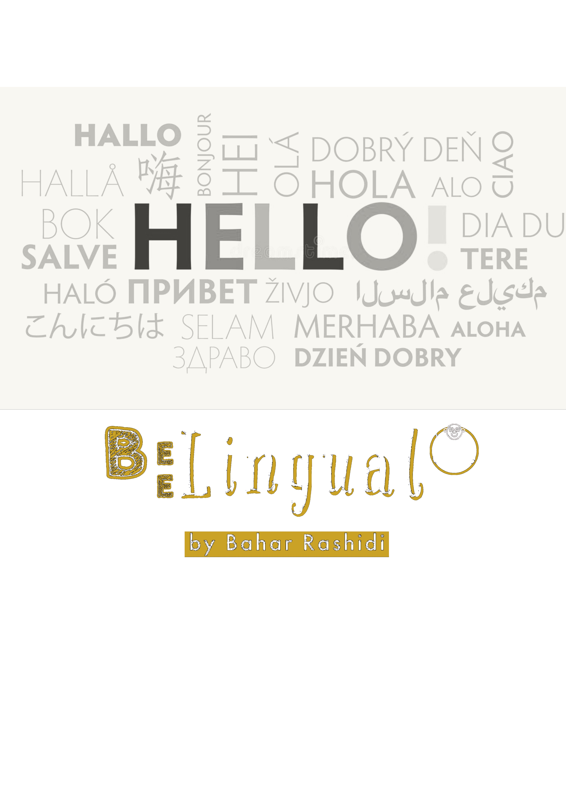
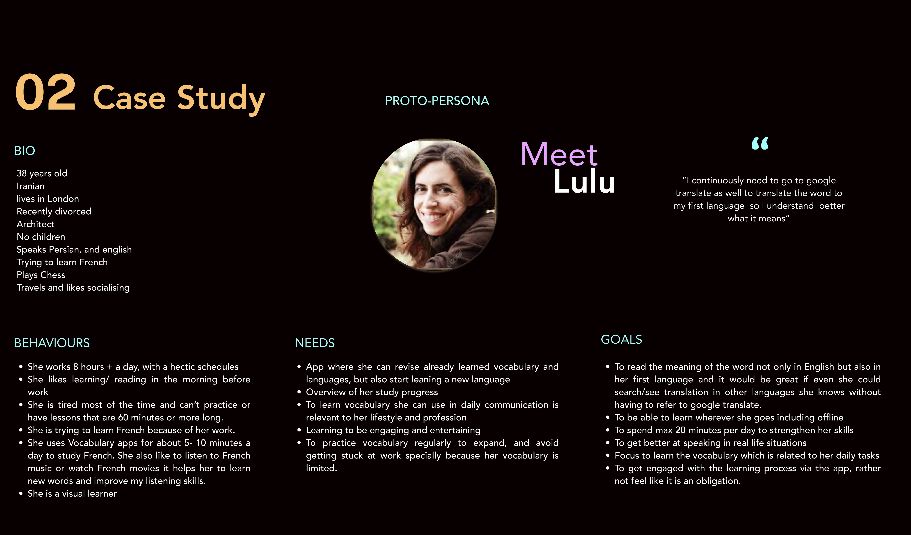
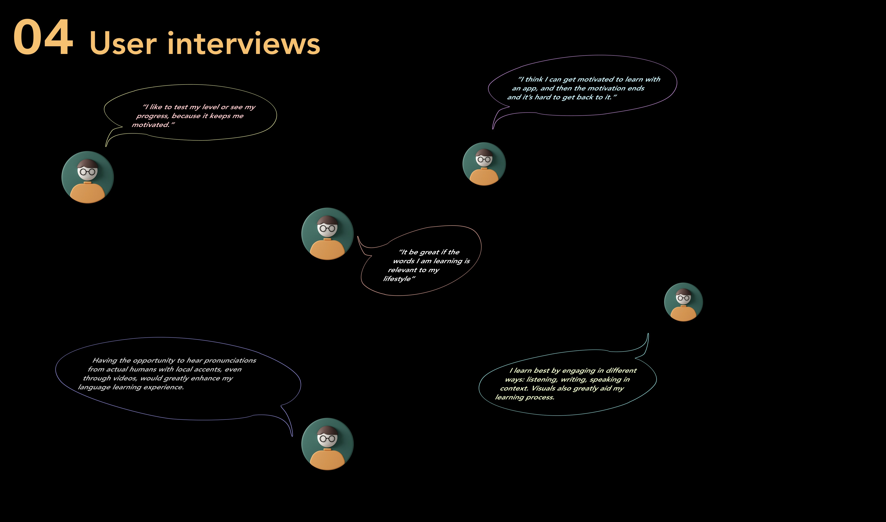
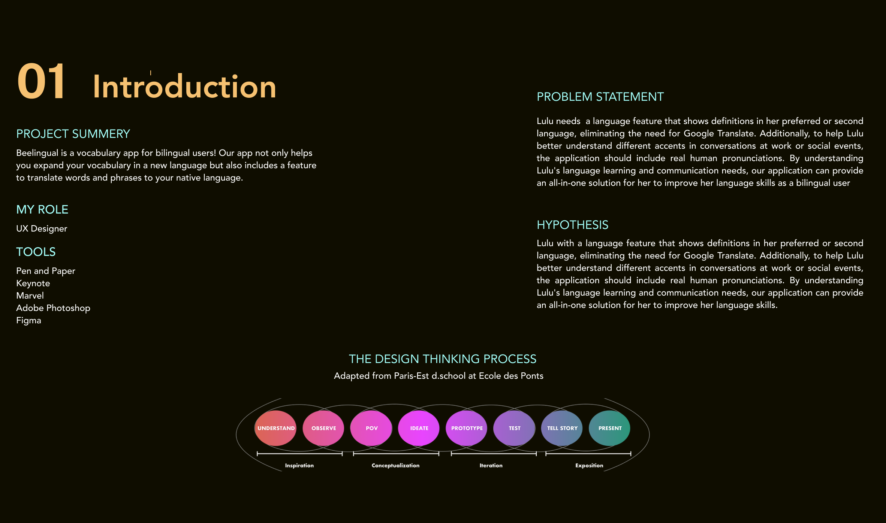
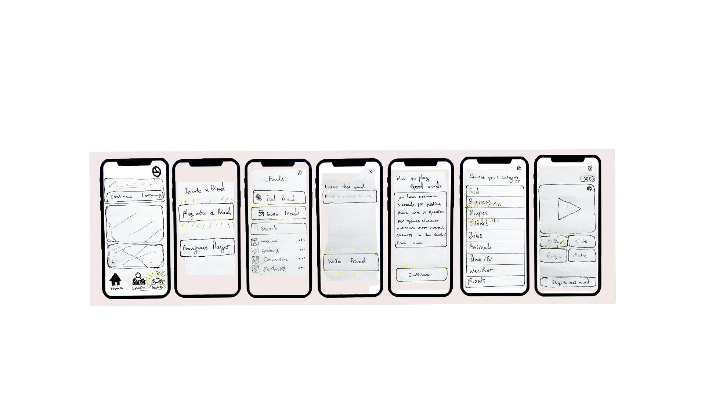
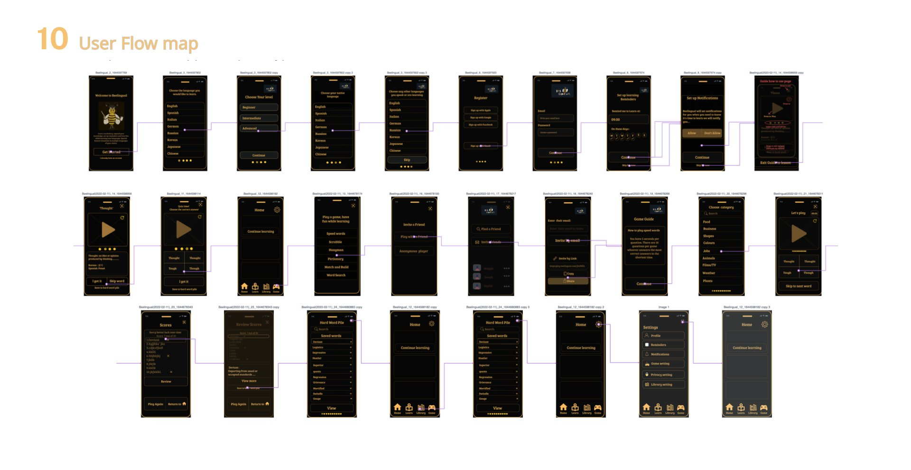
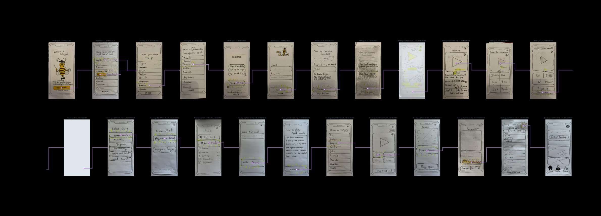
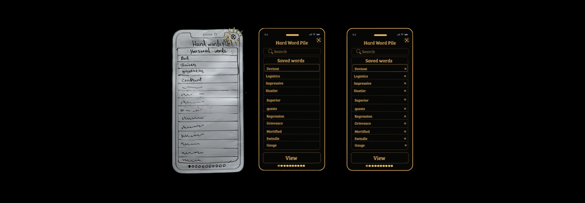
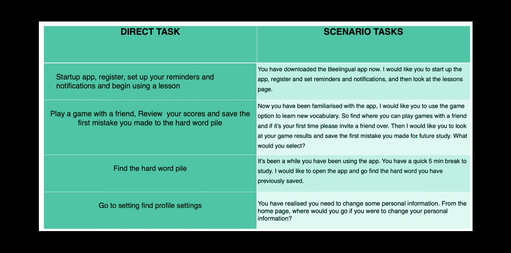

Designing a vocabulary app for bilingual users who want to learn new languages without constantly reaching for Google Translate.
Role
Solo UX Designer
Tools
Figma · Marvel · Keynote
Platform
Mobile (iOS)
Methods
Research · IA · Wireframing · Prototype


5
User Interviews
3
Competitors Audited
8
Process Stages
2
Core Tasks
01
Overview
Bilingual users are underserved by mainstream language apps. Most vocabulary tools assume a single native language and a single target — they don't account for users who already think across two languages and want a third.
"I continuously need to go to Google Translate to translate the word to my first language so I understand better what it means."
BeeLingual is a vocabulary app built specifically for bilingual users — it expands your vocabulary in a new language while showing definitions in your preferred or second language, eliminating the constant Google Translate detour.
5
User interviews with bilingual learners
3
Competitor apps audited: WordUp, Vocabulary, Word of the Day
2
Core tasks: learn a new word, play a vocabulary game with a friend

Project introduction — problem statement, hypothesis, and the design thinking process adapted from Paris-Est d.school
02
Research
Research started with a competitive audit of three vocabulary-focused apps — WordUp, Vocabulary, and Word of the Day — followed by user interviews with bilingual learners actively studying a third language.
Key findings from competitor research:
Assessments work — successful apps use upfront assessments to gauge skill level and tailor early lessons
Icon-only navigation fails — Vocabulary app relies on icons without labels, leaving users guessing what each section does
No bilingual translation layer — none of the three audited apps support definitions in a user's preferred second language
Games and audio are table stakes — voice pronunciations, visual aids, and quizzes are universal across the category
Competitor research — three vocabulary apps audited for assessments, navigation patterns, and feature gaps
"I think I can get motivated to learn with an app, and then the motivation ends and it's hard to get back to it."
— Research participant on retention
User interview themes clustered around four areas: motivation and habit-forming, relevance to lifestyle, multi-modal learning (listen, write, speak), and the desire to hear real human pronunciations rather than text-to-speech.

User interview synthesis — bilingual learners on motivation, relevance, and learning style
03
Define
Research findings were distilled into a single proto-persona — Lulu — representing a bilingual professional with limited time, a hectic schedule, and a clear practical motivation for learning a third language.
L
Meet Lulu
38, Iranian, lives in London. Architect. Speaks Persian and English, learning French for work. Visual learner. Studies 5–10 minutes a day on existing vocabulary apps but feels frustrated constantly switching to Google Translate to understand new words in her first language.
Behaviours
Works 8+ hour days, hectic schedule
Learns/reads in the morning before work
Tired in evenings — 60-minute lessons don't fit
Uses vocab apps 5–10 mins/day
Listens to French music, watches French films
Visual learner
Needs
Revise learned vocab + start a new language
Overview of study progress
Vocabulary relevant to her profession
Engaging, entertaining learning
Regular practice to avoid getting stuck
Goals
Read meaning in English and Persian
See translations in other known languages
Learn offline, anywhere
Max 20 minutes per day
Get better at speaking in real life
Engage with learning, not feel obliged

Proto-persona — Lulu, a bilingual architect learning French
04
Information Architecture
Two task flows were mapped end-to-end before any visual design started: Task 1 — learn a new word and translate into multiple languages from a cold open. Task 2 — play a vocabulary game with a friend, review results, and save mistakes for later.
Key decision: onboarding asks for both a target language and a native language up front, then optionally lets users add other languages they already speak — directly enabling the multi-language translation feature later.
Information architecture — full task analysis for both core flows
05
Design Process
The design moved through distinct fidelity stages — sketches first, then paper prototypes for both flows, then wireframes, then hi-fi. Each stage validated the previous before adding more resolution.
1
Hand Sketches
2
Paper Proto
3
Wire frames
4
Hi-Fi Design
5
User Flow
Hand-drawn concept — the bee mascot and the first three onboarding screens

Paper prototype — the full Task 2 flow: home → invite a friend → game guide → category → speed words

Wireframes & rapid prototyping — translating sketches into digital screens

Hi-fi user flow map — both tasks mapped end-to-end across 25+ screens
06
Features & Prototype
Three core features were taken to hi-fidelity, each addressing a specific finding from research.
Feature 01
Multi-language Translation
Every word shows its meaning in English plus the user's native language and any other languages they speak — directly answering Lulu's frustration with Google Translate detours.
Feature 02
Speed Words Game
A 10-word, 5-second-per-question game playable solo or with a friend. Mistakes auto-save to a Hard Word Pile for review, turning losses into a learning loop.
Feature 03
Hard Word Pile
A personal review library of words the user got wrong or marked as difficult — searchable, removable, and surfaceable on demand for short 5-minute review sessions.

Hard Word Pile — saved mistakes from speed-words games, ready for review
A clickable prototype was built and tested against four direct tasks and four real-world scenario tasks — covering registration, gameplay with a friend, finding the hard word pile, and adjusting profile settings.

Usability testing matrix — four direct tasks paired with realistic scenarios
07
Outcome & Reflections
BeeLingual demonstrates a complete UX process focused on a real, underserved user — bilingual learners — rather than the generic "language learner" most apps target.
What worked well
Persona-driven feature decisions
Every core feature traces back to a specific behaviour, need or goal in Lulu's profile. The multi-language translation, the 5-second speed game, and the hard word pile all answer a real research insight rather than a designer assumption.
What I'd do next
Test, iterate, and add real audio
Run usability testing on the clickable prototype. Build the locally-recorded human pronunciations feature users specifically asked for. Validate the speed-words timing — five seconds may be too tight for beginners and too easy for advanced users.
A complete end-to-end UX process
Every stage documented — from the first competitor audit through to a clickable hi-fi prototype covering both core user tasks.